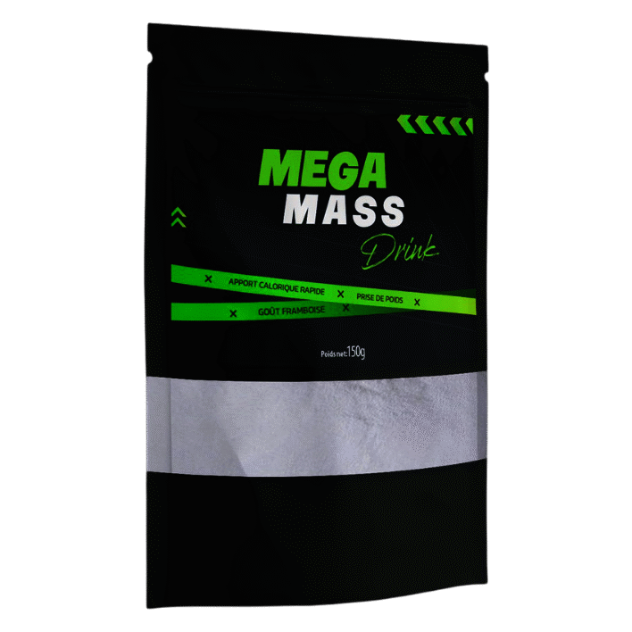

À propos
Herbal Vitaly sélectionne des actifs végétaux et des formules lisibles pour un usage quotidien responsable. Qualité, transparence des informations et accompagnement jusqu’à la livraison font partie de notre engagement.
Développez votre masse,
maximisez vos performances
Pack Gélules + Drink · Dextrine, Sucre de Canne, Inuline. Prise de masse & récupération.

MEGA MASS combine des gélules et une boisson en poudre pour un apport calorique rapide et un soutien musculaire optimal.
Formule concentrée pour soutenir la croissance musculaire naturelle et optimiser l'anabolisme lors des séances d'entraînement intensif.
Boisson en poudre saveur framboise, apport calorique rapide grâce à la Dextrine et au Sucre de Canne naturel. Idéal avant et après l'entraînement.
L'Inuline de chicorée (prébiotique) favorise la bonne digestion des nutriments et leur assimilation optimale par l'organisme.
Des actifs naturels sélectionnés pour leur efficacité et leur sécurité d'utilisation.
Maltodextrine naturelle
Source d'énergie rapide et facilement assimilable par les muscles. Idéale avant et après l'effort pour reconstituer les réserves de glycogène musculaire rapidement.
Saccharum officinarum
Source naturelle de glucides rapides qui apporte l'énergie nécessaire à l'effort intense. Contribue à la prise de masse en compensant le déficit calorique lié au sport.
Cichorium intybus – Prébiotique
Fibre prébiotique naturelle qui nourrit les bonnes bactéries intestinales, améliore la digestion et favorise l'absorption optimale des nutriments essentiels à la croissance musculaire.
Actifs musculaires
Mélange d'extraits végétaux sélectionnés pour soutenir la synthèse protéique naturelle, accélérer la récupération musculaire et réduire la fatigue après l'effort.
La Dextrine et le Sucre de Canne fournissent l'énergie nécessaire pour compenser le déficit calorique et soutenir la prise de masse musculaire.
La formule complète optimise l'anabolisme naturel et favorise la synthèse protéique pour des muscles plus volumineux et plus forts.
L'Inuline prébiotique favorise la bonne digestion des nutriments et leur absorption optimale pour maximiser les résultats.
Aucun produit dopant, aucun stéroïde. MEGA MASS accompagne votre prise de masse uniquement par des ingrédients naturels.
Mélangez 1 dose de MEGA MASS Drink dans 250ml d'eau et consommez 30 minutes avant l'entraînement.
Prenez 1 gélule MEGA MASS avec un verre d'eau juste après l'effort pour optimiser la récupération musculaire.
Associez MEGA MASS à un programme d'entraînement régulier et une alimentation riche en protéines pour des résultats optimaux.
⚠️ Convient aux adultes en bonne santé. Déconseillé aux femmes enceintes ou allaitantes. Tenir hors de portée des enfants. Ne pas dépasser la dose journalière recommandée. En cas de traitement médical, consultez votre médecin.
Des retours authentiques de personnes qui ont intégré MEGA MASS dans leur routine bien-être.
"Depuis que j'utilise MEGA MASS, j'ai pris 4kg de masse en 2 mois. Le drink framboise est délicieux et me donne vraiment de l'énergie pour mes séances."
"Complément naturel très efficace pour la prise de masse. Je récupère beaucoup mieux après mes entraînements. Je recommande à tous les sportifs."
"Produit de bonne qualité. La formule gélules + drink est pratique et les résultats sont là après 6 semaines d'utilisation régulière."
* Les témoignages reflètent des expériences individuelles. Les résultats peuvent varier d'une personne à l'autre.
Disponible en Tunisie. Livraison rapide et sécurisée partout sur le territoire.
Compléments alimentaires et soins formulés avec exigence — sans promesses médicales irréalistes.
Herbal Vitaly sélectionne des actifs végétaux et des formules lisibles pour un usage quotidien responsable. Qualité, transparence des informations et accompagnement jusqu’à la livraison font partie de notre engagement.
Livraison en Tunisie ; délais selon votre région. Paiement à la livraison le plus souvent. Échange ou remboursement selon l’état du colis et nos CGV.
Données de commande / contact uniquement, pas de revente. Cookies techniques et analytics éventuels. Droits d’accès ou de suppression via Contact — détails : politique.
Ces produits ne remplacent pas un avis médical. Résultats variables. Réservé aux adultes (18+), sauf mention contraire. En cas de doute, consultez un professionnel de santé. Mentions légales.
Service client Herbal Vitaly — utilisez le formulaire ci-dessous ou la page Contact. Coordonnées téléphone / e-mail / WhatsApp : infos à venir.
Tunis, Tunisie
Téléphone, e-mail et WhatsApp : infos à venir — en attendant, passez par le formulaire Contact.
Lun – Sam : 9h00 – 18h00